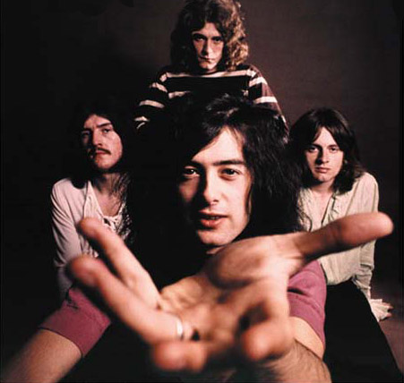
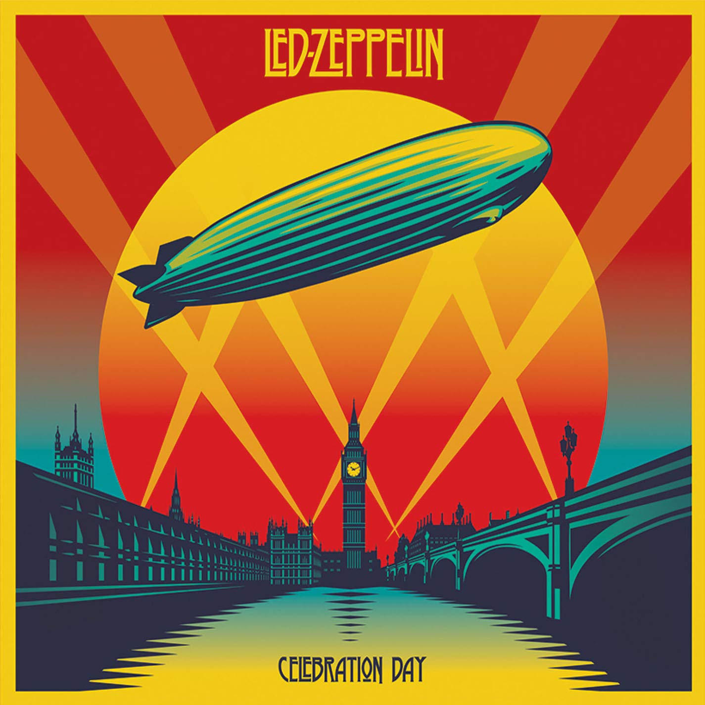

There was a band who had 3 best guitarists in world, Eric Clapton, Jeff Beck, and a freshman guitarist Jimmy. Who would have known how high and how far his own ship would have reached?
With Jone Paul Jones, John Bonham and Robert Plant, Led Zeppelin rocked the whole world: Britain, US, teenagers, groupies.
Page made a return to the stage at a Jeff Beck show, working with Eric clapton, but all these drugs have droven him too far. After stopped using these drugs, his relationship with Robert Plant became a mystery. After all, they are two greatest artists of all time, who haven't got a temper?
The greatest album by Led Zeppelin, combining both core of hard rock and magnificent country element. Not to mention, there it is, Stairway to Heaven, one of the greatest epic rock song ever.
The combination of four members reached a peak, epic song "In my time of dying", funk or jazz elements in the whole album, Robert Plant again developped his voice, and the famous Kashimir.
Live soundtrack album of the concert film, which is truly worth seeing. Not only the songs are great, but four members gave a rather fun performance on the screen.
Old buddies come together, after so many years. Some songs are in low-key, but who cares? You can't even get a live ticket in O2 arena!
Jimmy Page played the Dragon Telecaster at a live concert in London 1969 for the Led Zeppelin song, "Dazed and Confused". It's also knowen as recording the solo of "Stairway to heaven"
The main guitar used by Master Page, almost every song such as Whole Lotta Love and Rock N Roll. Fun fact: As a big fan of Jimmy Page, Slash's first guitar was paying tribute to this LesPaul 1959.
Although he was not the first to play a double-neck, he was definitly the most famous. And of course, that's the reason why Stairway is forbidden in guitar stores :) BTW EDS-1275 are really rare.
I have a strong affection for this guitar, dirty and blury sound makes it really hard to forget. If you have a chance to play a Danelectro, never forget to try Kashmir.